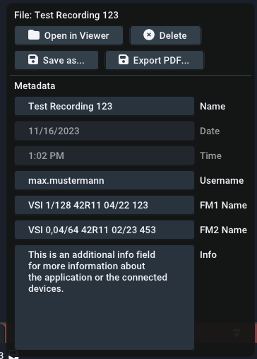
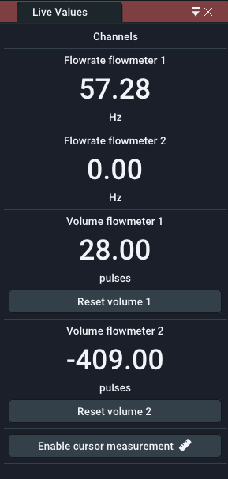
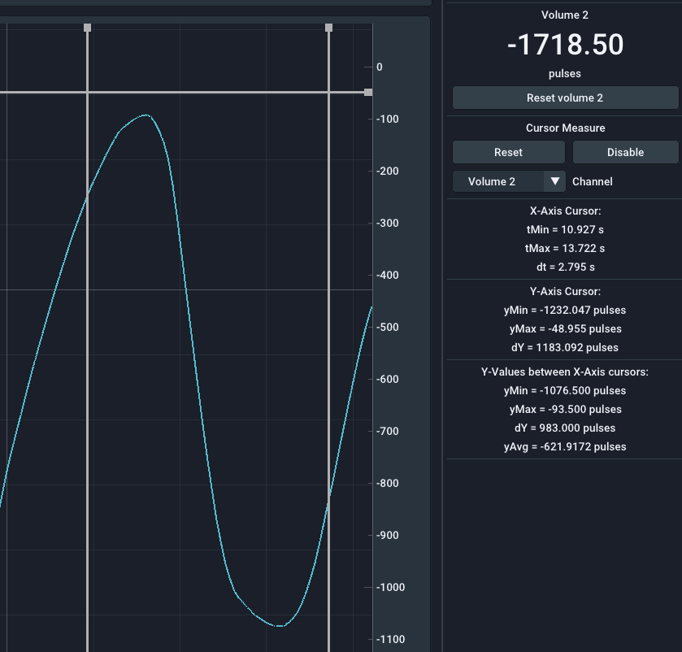
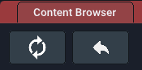
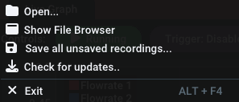
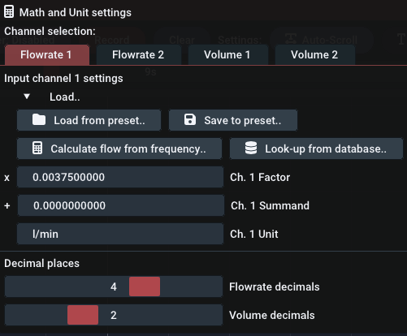
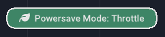

User Interface Guide
Panels#
The software's user interface is based on panels in a main window. By default, the main window consists of the big Live graph panel and a Live value panel on the right, but additional windows can be toggled using the Window menu. You can drag the panels out of the window by dragging on the title bar of each panel and dropping them. To re-dock them, press and hold the SHIFT key while dragging and use the overlay to position it.
Previously saved recordings open up as tabs of the Live graph panel. You can identify them by the File: prefix in the title bar.
Live graph panel#
Plot navigation#
The plot window shows an XY-Plot of the measured data. While the X-Axis refers to the time, the Y-Axis refers to the actual value. There may be two seperate Y-Axes on the left and right of the plot. This is done to seperately control the different dimensions of flowrate and volume.
Hint: This applies to both the live plot and the file viewer
Use your mouse to navigate the plot window:
- Clicking and dragging with the left mouse button on the plot moves it.
- Clicking and dragging with the left mouse button on an axis moves this axis only
- Double left clicking in an axis auto-adjusts it and also recovers Auto-Scroll or AutoScale functionality.
- Clicking and dragging with the right mouse button selects a region to zoom into
- Scrolling on an axis or the plot zooms in/out
Refer to the following video:
Controls#
-
Running/Pause button: Start or pause the incoming data stream. All samples during a pause will be discarded. Alternatively you can disable the Auto-Scroll feature (see below) to visually pause the plot while still keeping the data stream running.
-
Trigger button: Enables or disables the trigger functionality that can be configured using the data logging menu. This will start a recording automatically if a certain condition is met.
-
Record button: Manually start or stop a recording. Active/finished recordings will be shown in the recordings panel.
-
Clear button: Clear all historic data in the live graph panel. This leaves you with an empty plot window.
-
Auto-Scroll Feature: The Auto-Scroll feature will make the right side of the plot sticky with the current time. This means that the most right value will always be the most recently recorded value. As a consequence the plot will automatically scroll as time progresses. In most cases, it should be kept on. When zooming using the right mouse button, this feature will be disabled. When double clicking the X-Axis, this feature will be re-enabled. Before you can move the plot in the X direction, you will need to disable the feature.
-
Auto-Scale Feature: The Auto-Scale feature will automatically adjust the Y-Axes according to the visible data in the plot. It is also dependent on the selected history time. The feature can sometimes be distracting (for very small value changes) and you should consider turning it off and manually setting the expected Y-Ranges using the scroll wheel and dragging.
-
Lock-Min Feature: The Lock-Min feature will lock/fix the current minimum value (e.g.
0) of the flow axis. This option can be used in combination with the Auto-Scale feature to allow the maximum value to scale automatically while keeping the X-Axis in view and to not automatically zoom in too much. -
History slider: The selected time on the history slider will set the visible range of the plot. It controls how long you can look into the past. In case you use log.flow and have set the sample rate setting to
Automatic, the history time will also (inversely proportional) affect the sample rate.
Limits#
To keep the RAM usage of the software moderate and the performance high, the maximum number of samples shown in the plot is limited. Therefore the visible samples will be removed if they exceed a buffer size of 524288 samples. Please note that recordings are not affected by this limit as the memory is allocated dynamically (as long as there is enough free RAM).
If you plan to take long recordings, it is therefore advisable to reduce the sample rate of the connected device.
Recordings panel#

The recordings panel lists all active, finished and imported recordings. Fresh recordings only persist in temporary RAM and you have to export them in order to keep them after the program exits. You will see different icons besides the filename to show different states of the file:
- : File is currently recording
- : File is unsaved and needs saving
- : File was saved successfully.
- : File was created using Dose-Mode
To manage a recording, right click on the list item. A windows pops up that contains all file metadata. You can simply edit the fields. After editing you will need to re-save the file as it is not automatically updated on your HDD.
Hint: Close file to edit name
To edit a file's name, you will need to close the file's tab if it is open in the live plot panel.
Filetypes + Import/Export#
There are four different import/export file types available:
| File type | File extension | Advantages | Disadvantages | Recommended |
|---|---|---|---|---|
| Protocol Buffers | pb.bin | Fastest, small size | Not portable to other programs | |
| Excel Sheet | xlsx | Widely supported filetype, Excel graphs | Very slow, row limits, RAM usage high | |
| XML file | xml | Fast, Readable format | Very verbose and huge filesize | |
| PDF file | Looks good, fast to create report | No actual data, only image of plot |
Excel sheet modifications
When importing an Excel sheet that was previously exported using EasyGraph, user modifications such as custom graphs or missing rows may cause the file to not open properly or the program to crash.
PDF report#
This is what the exported PDF report looks like:

Live value panel#

The live value panel contains the current values from the datalogging device. The number of visible channels depends on the connected device ( it's channel capability) and if the channel is set to visible in the Plot menu. The channel names are automatically adapted to the connected device.
You can change the number of visible decimal places seperately for Volume and Flow in the Math menu. This setting does not affect the recoding resolution or internal value. In this menu you can also change the unit label that is shown below the value. To actually convert the value to other units, use the math options (factor and summand).
With the log.flow device connected, the volume display will have a Reset Volume button to quickly set the Volume back to zero.
Middle Mouse Click
Quickly hide/disable unused channels by clicking on them with the middle mouse button. You can re-enable them via the plot menu. Disabled channels will be recorded even when they are hidden.
Cursor measurement#
Cursor measurement can be enabled either by using the Enable cursor measurement button below the live values or by checking on the option in the Plot menu. Once activated, it makes sense to disable the Auto-Scroll and AutoScale functions or stopping the datastream using the Running/Pause button. After enabling, movable cursors appear in the live plot window. You can move them by left clicking and dragging the lines or their little rectangle handles at the plot's edges.
Below the live values you will find the measured values between the cursor lines. Here you can also select the channel, that you want to measure on, using the combo box. The time values are indepentent of the axes. The measurement is grouped into three sections:
- In the first section the time values at the X-Axis cursors are shown together with the difference (
delta) between them. - The second section contains the values of the Y-Axis cursors based on the selected channel. Their difference is also shown here.
- The third section will display a statistical evaluation of all measured values between the X-Axis cursors. You can see the maximum (
yMax), minimum (yMin) and average (yAvg) of all values in-between.
Cursors don't support files atm
At the moment, cursor measurements are not available in file view. This feature will be added in future releases.

File browser panel#
You can show the file browser panel by enabling the option in the main menu bar using Window Show File Browser. This will display an explorer-like file browser on the left side of the plot window.
In the topmost layer the file browser will list all attached harddrives and network drives. Additionally commonly used directories such as Desktop, User and Documents will be shown.
While directories are always shown, files are only shown if the filetype is compatible with EasyGraph. Supported file extensions are: pb.bin, `xlsx and xml. Import files (recordings) by double clicking on them. The program will then scan the file and verify, that it is compatible. If all checks pass, the file will be shown in the Recordings panel.

You can use the buttons at the top to perform certain actions:
- Refresh: Reload the current directory and re-list all files
- Up: Go up one directory layer until you reach the topmost layer with all drives and shortcuts
Main menu bar#
This section will go over every option in the main menu bar.
File#

Open: Use the explorer to select a recording that you want to re-import. Supported filetypes are pb.bin, xlsx and xml.
Show File Browser: Use the integrated file browser panel to find recordings to re-import.
Save all unsaved recordings: Opens an explorer window to select the directory you want to save all unsaved recordings into. This does not check for existing files so it is advised to choose an empty directory.
Check for updates: Starts the update checker. This will require a working internet connection. If a new version is available, you will be shown more information about new features and a download link.
Exit: Closes the application.
Close with unsaved recordings
If you are closing the application while having unsaved recordings, a popup will appear that asks you to either save or discard the files. You can also cancel the closing and save them manually yourself.

- Close: Discard all recordings and close the program
- Abort: Don't close the program to check manually
- Save: Save all unsaved recordings into a directory and close after this
Update Check#
On each program start the software will check for software updates. Updates can contain new features, more device support, bugfixes and stability improvements. If a new update is available, a window will be shown with information about the changes and a link to the download page.

The update (msi file) must be installed manually. You will be redirected to our download portal where you will need to enter your customer id and the product/license key.
You can also invoke the update checker manually by clicking on the version number in the top right corner or using the File menu.
Device#
The device menu manages the connection to a datalogging device and its settings.
As the description is highly device dependent and extensive, it has been put into its own section. Check out the Devices chapter!
Plot#

The plot menu contains options to customize the appearance of the plot window:
- You can change each plot's color by clicking on the colored square
- Show/Hide plots by checking/unchecking them
- Use the slider to change the line thickness of all plots
- Show Markers on each received datapoint from the datalogger
You can also enable the Cursor Measure feature from here. This is described more throughoutly in this section.
Data Logging#
Trigger options#

The Data Logging menu contains options about the trigger functionality. The trigger can automatically start and stop a recording if one or multiple predefined condiditions are true.
Before enabling the trigger using the corresponding checkbox or using the button in the live graph panel, configure the trigger options below. You can optionally turn on a notification sound that plays through the speakers when the trigger starts or stops the recording.
Trigger mode: First you need to specify the trigger mode. This influences whether the trigger functionality will be disabled after the first successful trigger (OneShot) or stay active for subsequent triggers (Repeating).
Recording duration: Next you set the recording duration using the slider. The total duration is the sum of the recording duration and the pre-trigger duration that you set in the next step.
Tip: Custom duration
You can set a custom duration in seconds by performing a left mouse click on the slider while holding down the CTRL key on the keyboard. This allows you to manually enter a value using the keyboard. Save by pressing Enter.
Pre-Trigger duration: This optional feature allows you to add values to the recording that happened before the trigger started. This gives you the chance to see what happened in the system before the trigger condition became true. After setting a non-zero value and enabling the trigger, the pre-trigger buffer (= ring buffer) will fill up will samples. Once full, you are ready to record!
Trigger conditions#
The trigger will fire if one or two conditions match. You can select how those conditions mathematically interact with each other:
- Disabled: Only condition 1 will be used
- AND: Trigger is true if condition 1 and condition 2 are both true
- OR: Trigger is true either condition 1 or condition 2 or both are true
The conditions itself are simple comparisons that you can configure using dropdown menus. The available options are layed out in the following table:
| Channels | Operators | Operator description | Value |
|---|---|---|---|
| Flowrate 1 | = | equal to | Enter value |
| Flowrate 2 | != | not equal to | |
| Volume 1 | > | greater than | |
| Volume 2 | >= | greater or equal than | |
| < | smaller than | ||
| <= | smaller or equal than |
Dosing mode#
Dosing mode is designed for volume measurement of dosing shots. The volume value is automatically reset if the flowrate is steady and at zero for a certain duration. You can find a more in-depth explaination in the advanced section of this manual.
Math#

Using the Math and Unit menu you can set channel specific unit calculations.
In this menu you can also change the unit label that is shown below the value. To actually convert the value to other units, use the math options (factor and summand).
If you expand the Load.. menu, you can save/restore your math presets and use calculation functions:
-
Save to preset..: Save the current factor, summand and unit to a preset with a user-definable name. It is recommended that you choose a name that helps you differentiate this preset later, e.g. include the channel type, flowmeter name, IPF, unit or testbench no.
-
Load preset..: Load a previously saved preset. Left-click shows a list of all presets. Right-click on a specific preset in this list shows a menu with an option to permanently delete the preset.
-
Calculate [...] from [...]: Using this button, the frequency/count value can be converted into the corresponding flowrate/volume value just by using the K-Factor of the flowmeter.
-
Look-up from database..: Using this option, you can easily choose a VSE flowmeter's default K-Factor if you don't know the average/mean K-Factor of the specific device.
Refer to the following video for visual guidance:
Using the sliders at the bottom you can change the number of visible decimal places (in the live value panel) separately for Volume and Flow. This setting does not affect the recoding resolution or internal value.
Window#
Visibility#
Using the window menu, you can toggle the visibility of the following panels:
- Live Value Panel (right)
- File Browser (left)
- Recordings Panel (bottom right)
Powersave Mode#

The powersave mode was implemented to limit hardware ressource usage when idle or unused. When the main window gets unfocused (e.g. another program is used on the PC), EasyGraph can throttle the framerate to save power. When powersaving is active and the window is unfocused, a green indicator is shown in the top area of the live graph panel.
There are three different powersave modes for the unfocused program state. When focused, rendering is always performed at full speed.

- Off: Always render at full speed (0% power saving)
- Normal/Throttle: Lower framerate to 6 fps (~50% power saving)
default - Maximum: Stop rendering (~95% power saving)
Remark: Recording performance is not affected when unfocused or minimized!
Window Start Location#

Using this feature, you can save the main EasyGraph window size and starting location that will be set at every program launch. To save the current location and size, simply press Save. To delete the custom starting location, press the Delete button. If no custom location is set (and thus no Delete button is visible), EasyGraph will start centered on the main monitor with some margin on each side.
You can use the Window Start Location feature for example to launch EasyGraph in fullscreen mode on another monitor.
Help#
In the Help menu you can find this documentation and several options to control the program state, such as:
- Option to reset math presets
- Option to restore the default window layout